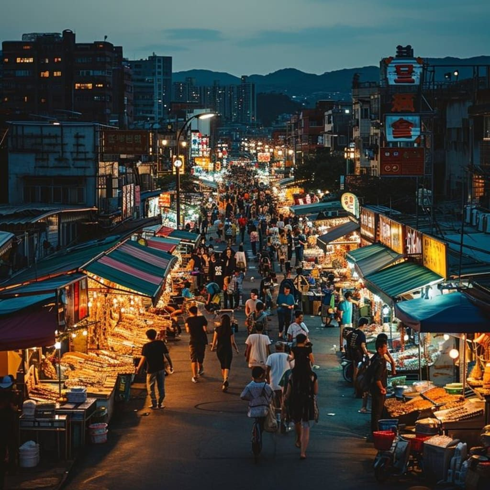
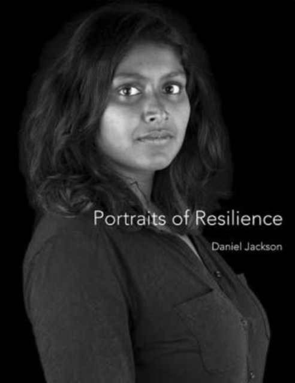
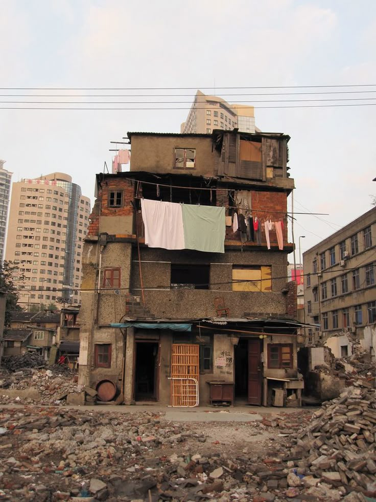

Our editors discuss how digital platforms are reshaping journalism and storytelling across the continent. | 34 min
Three young founders from Lesotho, Zimbabwe, and Kenya share their startup journeys. | 28 min
A visual story captured across urban Lesotho — people, places, and moments that define everyday life.


